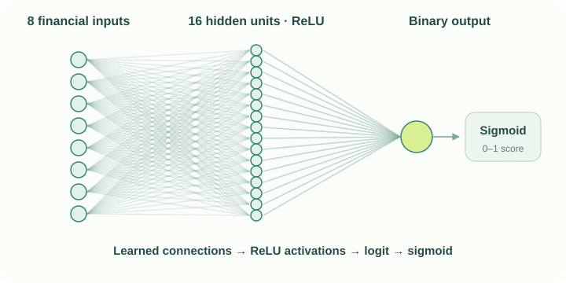

Explore the results
Select a model to see what it predicted on the same test set.
Choose a model
The results are from one experimental run at a fixed threshold of 0.5.
From financial inputs to a prediction.
Choose a model to connect its architecture with the results above.
MLP neural network
Eight standardized financial indicators feed a hidden layer of 16 ReLU units. A linear output and sigmoid produce a score for the bankrupt class.

The model learns connection weights and biases. ReLU lets it learn relationships beyond a straight line.
For the Taiwanese experiment, a score of at least 0.5 predicts class 1 (bankrupt). Lower scores predict class 0 (non-bankrupt).
Diagrams describe the Python research prototypes. Read the model implementation ↗
The Taiwan comparison uses eight predefined financial indicators. Wavelet packet features and genetic selection are explored separately in the original-data experiment; they are not used in these Taiwan results.